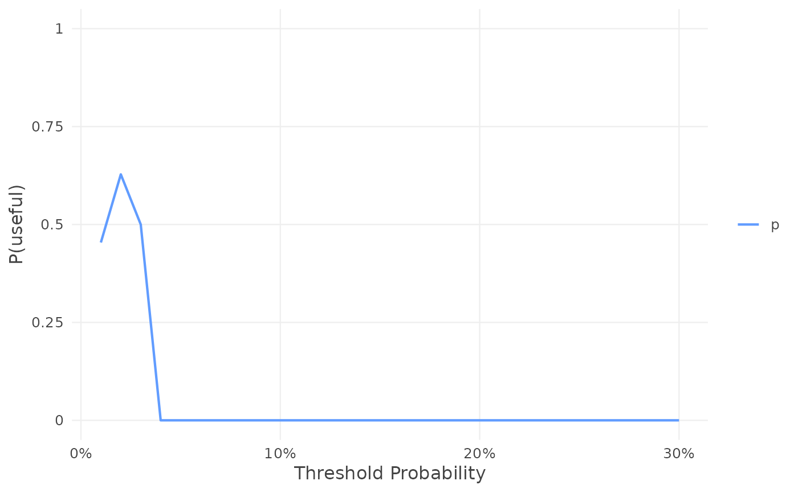
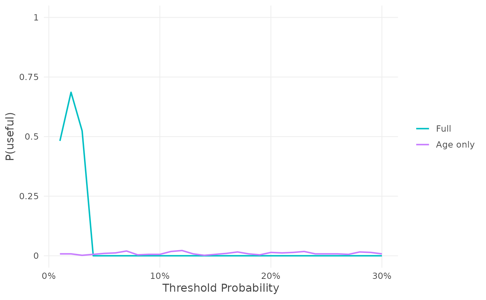

Plot the probability that a model is useful
plot.voipred_p_useful.RdThe plot of P(useful), e$p_useful for a result e of evpi() (also
drawn by plot(e, type = "p_useful")): P(useful) against the threshold, one
curve per model, in the colours of plot.voipred_nb().
Usage
# S3 method for class 'voipred_p_useful'
plot(x, ..., labels = NULL, colors = NULL, interactive = FALSE)Arguments
- x
The P(useful) of a result of
evpi(),e$p_useful.- ...
More P(useful) results to draw on the same plot, e.g. from other validation samples (
plot(e1$p_useful, e2$p_useful)). A result with one model given here with a name is labelled with its name.- labels
Optional names of the curves, one per model, in order. Default: the models' labels (or the argument names).
- colors
Optional colours of the curves, instead of the defaults: named by label, e.g.
c(Full = "darkred"), or unnamed, one per curve in order.- interactive
TRUEfor an interactive plot (needs the plotly package). DefaultFALSE.
Examples
df_dev_binary <- gusto[1:5000, ]
df_val_binary <- gusto[5001:5500, ]
fit <- glm(day30 ~ age + Killip + sysbp + pulse,
family = binomial, data = df_dev_binary)
df_val_binary$p <- predict(fit, newdata = df_val_binary, type = "response")
res <- nb_val(data = df_val_binary,
predicted_risk = df_val_binary$p,
outcome = "day30",
thresholds = seq(0.01, 0.3, by = 0.01))
set.seed(1)
e <- evpi(res, n_sim = 500)
plot(e$p_useful) # the same as plot(e, type = "p_useful")

# two models
fit_age <- glm(day30 ~ age, family = binomial, data = df_dev_binary)
df_val_binary$p_age <- predict(fit_age, newdata = df_val_binary, type = "response")
both <- nb_val(data = df_val_binary,
predicted_risk = list(Full = df_val_binary$p, `Age only` = df_val_binary$p_age),
outcome = "day30",
thresholds = seq(0.01, 0.3, by = 0.01))
set.seed(1)
plot(evpi(both, n_sim = 500)$p_useful)
